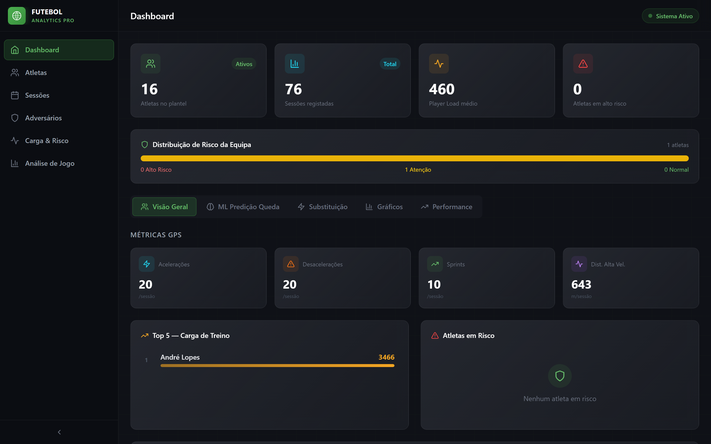
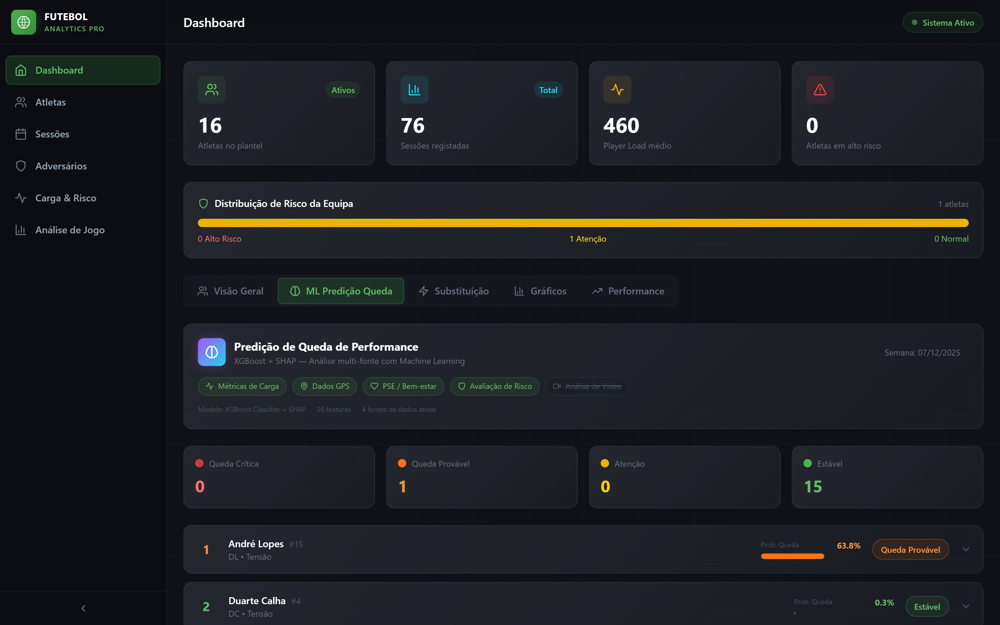
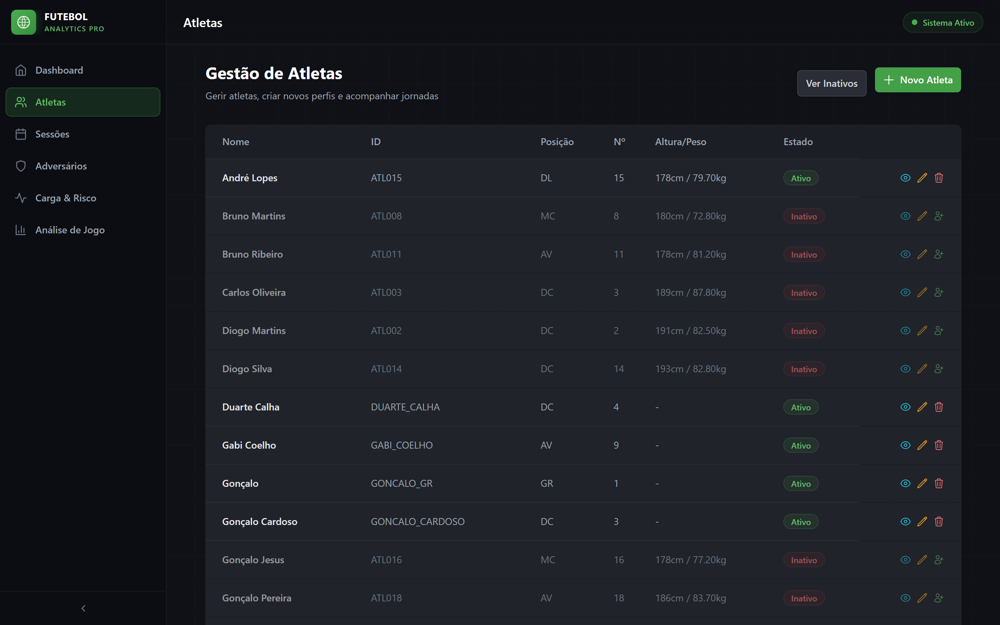
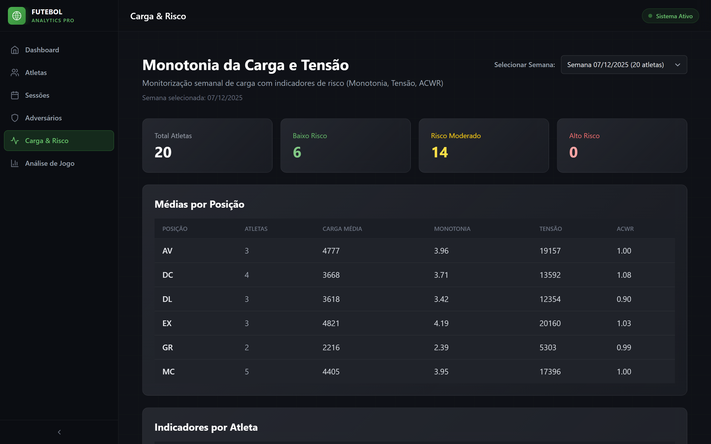
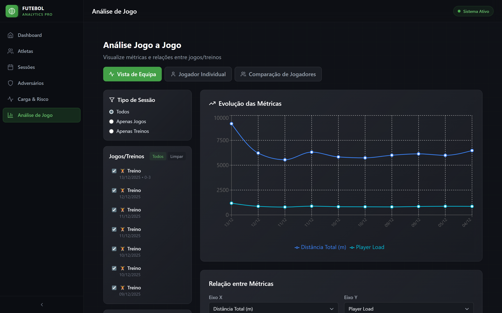

Plataforma operacional com modelos ML validados
Pronta para validação científica com dados reais de jogo
Rui Pedro Ribeiro dos Santos
Universidade de Trás-os-Montes e Alto Douro
Desenvolver e validar um modelo preditivo baseado em Machine Learning capaz de recomendar o momento ótimo de substituição ao longo de um jogo de futebol, integrando múltiplas fontes de dados.
"É possível prever, com base em dados de GPS, carga de treino, bem-estar e análise de vídeo, qual o momento ótimo para efetuar substituições durante um jogo, maximizando a performance coletiva?"
A integração de dados multi-fonte com modelos de ML explicáveis (XGBoost + SHAP) permite identificar padrões de queda de performance em tempo real, antecipando a necessidade de substituição antes que o rendimento se deteriore significativamente.
Plataforma web completa desenvolvida (FastAPI + React) com integração de dados GPS, PSE, Wellness e Vídeo
Modelo ML de predição pré-jogo implementado e operacional (XGBoost + SHAP) com 59 features e explicabilidade completa
Recolha de dados de uma época completa para validar modelo preditivo — necessita parceria com clube
Análise estatística, validação dos resultados e publicação científica em revistas de alto impacto
Apesar da enorme quantidade de dados disponíveis no futebol moderno, a decisão de quando substituir um jogador continua a ser maioritariamente baseada na intuição do treinador.
Dados em silos separados
GPS num software, wellness numa folha, vídeo noutro — sem integração
Sem modelos preditivos para substituições
A literatura foca-se em prevenção de lesões, não no timing de substituição
Substituições tardias custam pontos
Estudos mostram que substituições no momento errado afetam o resultado final
1. Um modelo que integre dados pré-jogo (carga semanal, wellness, risco) com dados em tempo real (GPS ao vivo) para prever queda de performance durante o jogo
2. Explicabilidade — o treinador precisa de saber porquê, não apenas quando
3. Validação com dados reais de jogos profissionais ao longo de uma época
Sistema completo desenvolvido e testado. Plataforma web profissional com modelos ML validados em dados simulados, pronta para deployment e validação científica com dados reais.
GPS (Catapult CSV), questionários PSE/Bem-estar, vídeo de treino e jogo
ACWR, Monotonia, Tensão, Z-scores, Risk Assessment multi-fatorial
XGBoost com 26 features e SHAP para predição de queda de performance
YOLOv8 para deteção de jogadores e bola em vídeo de jogo
Risco de lesão, performance e substituição com recomendações automáticas
Interface profissional para staff técnico com visualizações em tempo real
VISÃO GERAL — Métricas GPS, Risco, Carga
ML — Predição de Queda com SHAP
GESTÃO DE ATLETAS
Perfis completos, dados físicos, estado e histórico de sessões por jogador.
CARGA & RISCO
Monotonia, tensão e ACWR por posição. Classificação automática de risco.
ANÁLISE DE JOGO
Evolução de métricas ao longo dos jogos/treinos com comparação entre jogadores.
| Fonte | Dados | Timing |
|---|---|---|
| GPS | Distância, sprints, acelerações, player load | Tempo real |
| Wellness | Fadiga, sono, dor muscular, wellness score | Pré-jogo |
| Carga | ACWR, monotonia, tensão, carga semanal | Pré-jogo |
| Risco | Risco lesão, fadiga acumulada, wellness trend | Pré-jogo |
| Vídeo | Posicionamento, movimentação, padrões táticos | Tempo real |
Carga acumulada, wellness, risco de lesão, histórico recente
GPS em tempo real: distância, sprints, intensidade por período
ML identifica padrões de declínio comparando com baseline do jogador
SHAP mostra ao treinador porquê substituir e quando
A plataforma está construída e funcional. O modelo de predição de queda de performance já funciona com dados de treino. Para estender à predição de substituições em jogo, preciso de dados reais de competição.
Exports GPS de jogos e treinos
Catapult/STATSports CSV — já suportado pela plataforma
Questionários de bem-estar / PSE
Fadiga, sono, dor muscular — diários ou pré-sessão
Registos de substituições em jogo
Minuto, jogador substituído, jogador que entrou, contexto
Vídeo de jogos (opcional)
Para análise de computer vision — posicionamento e padrões táticos
Mínimo viável: ~20 jogos oficiais com dados GPS completos e registos de substituições
Ideal: Época completa (~40 jogos) + treinos semanais + wellness diário
Impacto zero no dia-a-dia do clube
A plataforma consome dados que o clube já recolhe (GPS, wellness). Não requer mudanças nos processos existentes — apenas acesso aos exports.
Dashboard completo de monitorização de performance, carga e risco — sem custos para o clube durante toda a colaboração.
Modelo treinado especificamente com os dados do clube — predições de queda de performance e recomendações de substituição.
Acesso aos resultados da investigação: padrões de performance, fatores de risco e insights específicos do plantel.
Dados anonimizados na publicação. Acordo de confidencialidade formal. O clube controla o que é partilhado.
Associação do clube a investigação de ponta em ciências do desporto e inteligência artificial aplicada ao futebol.
Manutenção e evolução da plataforma durante toda a colaboração, adaptada às necessidades do staff técnico.
Gabbett, T.J. (2016). The training-injury prevention paradox. British Journal of Sports Medicine.
Bourdon, P.C. et al. (2017). Monitoring athlete training loads. Int. J. Sports Physiology and Performance.
Bradley, P.S. et al. (2014). The effect of playing formation on high-intensity running and technical profiles. J. Sports Sciences.
Lundberg, S.M. & Lee, S.I. (2017). A unified approach to interpreting model predictions. NeurIPS.
Bunker, R.P. & Thabtah, F. (2019). A machine learning framework for sport result prediction. Applied Computing and Informatics.
Assinatura de NDA formal antes do início da colaboração. O clube aprova toda a informação antes de qualquer publicação.
Todos os dados publicados são anonimizados. Nomes de jogadores, staff e clube são codificados nas publicações.
Estudo aprovado pela comissão de ética da universidade. Consentimento informado de todos os participantes.
Plataforma funcional com dados de teste — pronta para receber dados reais do clube.
A plataforma está pronta. O modelo está implementado.
Para dar o próximo passo — prever substituições em jogo — preciso da vossa colaboração.
Exports de jogos e treinos
Questionários diários
Registos de jogo
Opcional
Rui Pedro Ribeiro dos Santos
Universidade de Trás-os-Montes e Alto Douro
📧 al64943@alunos.utad.pt · rui.coach.performance@gmail.com
📱 +351 932 177 858
Obrigado pela atenção.